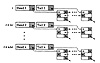
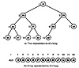
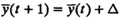

- 1. Ordered Linked List: The approach most commonly used in simulation languages such as SIMULA, GPSS, and GASP IV is that of keeping an ordered doubly linked list, as shown in Figure 24.7. The first entry in the list is the next earliest event. Thus, removal is straightforward. To insert a new event, the list is searched to find the right place for the new entry. A number of alternatives for search direction have been proposed. The most common method is to search backward from the highest time value. Alternately, the list could be searched forward from the first entry. Some have even tried keeping a pointer on the middle entry, first determining the half that would contain the right place and then searching forward or backward to determine the place.
- 2. Indexed Linear List: In this approach, the set of future events is divided into several subsets. Each subset spans a fixed interval Δt of the time interval and is maintained as a sublist, as shown in Figure 24.8. An array of indexes is kept such that the ith entry of the index points to the ith sublist that contains events scheduled for the interval [(i - 1)Δt, iΔt), that is, at or after time (i - 1)Δt but before time iΔt. Here, Δt is an interval specified by the user. Thus, given a new event to be inserted, the required sublist can be determined without any search. The proper sublist is then searched backward to find the position of the new entry.

FIGURE 24.8 Indexed list.
A number of variations to this approach have also been proposed based on the argument that the event-hold times (the time between scheduling an event and its occurrence) are not uniformly distributed. In one variation, an attempt is made to keep all lists of the same length, the interval covered by each index entry; that is, Δt is variable. Binary search is used to find the proper index entry. In another variation, only the first list is kept sorted; other lists are kept unsorted. A sublist is sorted only when it becomes the first sublist, thereby reducing the sorting overhead.
An interesting variation of this approach is called calendar queues. It is based on the desk calendars used by human beings to schedule events. A typical desk calendar has 365 pages—one page for each day of the year. All events for a single day are written down on the page corresponding to that day. The events for the same day of the next year can also be written on that page. This will not cause any confusion if the year of occurrence is also written down with the event and the events are deleted after they have taken place. This idea can be easily implemented using an indexed linear list. The interval Δt corresponds to a human day, and size of the index corresponds to the number of days in a year. Both these parameters should be carefully chosen so that the number of events per page is small (close to 0 or 1). A procedure to dynmically adjust these two parameters is described by Brown (1988) who also showed that the algorithm takes a fixed amount of time per event regardless of the number of events.
- 3. Tree Structures: Tree data structures have also been used for simulation event sets. Usually a binary tree is used. The time to search through n events is then log2n.
A special case of the binary tree is the heap, where each event is stored as a node in the binary tree. Each node can have up to two children, and the event time for each node is smaller than that of its children, if any. This implies that the root always has the earliest event time. The advantage of heaps is that the tree can be stored in an array (as opposed to a linked list) by putting the root at position 1 of the array and its children at positions 2 and 3. The nodes at the next level are kept in array positions 4, 5, 6, 7, and so on, as shown in Figure 24.9. The traversal of a heap is simple because it is easy to find the parents and children of any particular node. The two children of the node in position i are in positions 2i and 2i + 1. The parent of a node in position i is at the position [i/2]. Here, [·] represents the truncation to the next lower integer. The array has to be rearranged partially after each insertion or removal.

FIGURE 24.9 A heap.
The heaps can be further extended to k-ary heaps that make use of k-ary trees in which each node has up to k children.
The choice of the proper data structure depends upon the distribution of event hold times and the number of events in the future event set. It also depends upon the ease with which various data structures can be implemented in the given programming language. In a study by Reeves (1984), the simple linked list was found to be the most efficient alternative if the number of events was small (less than 20 events). For event sets of sizes 20 to 120, index linear lists were the best, while for larger sets, heaps were found to be the most efficient. Similar conclusions were also drawn in an earlier study by McCormack and Sargent (1979).
EXERCISES
- 24.1 For each of the following models, identify all classifications that apply to it:
- a. y(t) = t + 0.2
- b. y(t) = t2
- c. y(t + 1) = y(t) + Δ, Δ is not an integer.
- d. n(t + 1) = 2n(t) + 3
- e. y(t) = sin(wt)
- f. 
- 24.2 Which type of simulation would you use for the following problems:
- a. To model destination address reference patterns in a network traffic given that the pattern depends upon a large number of factors.
- b. To model scheduling in a multiprocessor system given that the request arrivals have a known distribution.
- c. To determine the value of π.
- 24.3 What is the unit time approach and why is it not generally used?
){kind=link}
){kind=link}
){kind=link}
){kind=link}